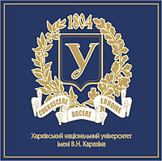
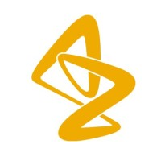

About
Mathematician/statistician with a strong interest in applications of mathematical and statistical methods (optimization, numerical methods, Monte Carlo simulations) to research problems in (bio)statistics, pharmacometrics, econometrics, machine learning, data science.
15+ years of research experience in mathematical physics and biostatistics which is summarized by 30+ scientific publications in mathematical and statistical journals.
Personal web page: https://yevgenryeznik.github.io/personal-page
Education
Sep. 2014 – Apr. 2019
Uppsala, Sweden
Uppsala University, Department of Mathematics
Ph.D. in Applied Mathematics and Statistics
Thesis: “Optimal adaptive designs and adaptive randomization techniques for clinical trials.”
Courses taken: Applied Mathematics, Analysis of Time Series, Uncertainty Quantification, Computational Python, Validated Numerics, Foundation of Machine Learning, Advanced Statistical Computing, Computer-Intensive Statistics, Introduction to Data Science, Foundation of Data Science.

Sep. 1996 – Jun. 2001Kharkiv, Ukraine
Kharkiv National University, Department of Mechanics and Mathematics
Specialist/M.Sc. in Applied Mathematics
Thesis: “Numerical analysis of a plane monochromatic wave scattering from a parabolic cylinder with a circular reflector.”
Coursework included: Mathematical Analysis, Functional Analysis, Analytic and Differential Geometry, Linear and Abstract Algebra, Ordinary and Partial Differential Equations, Discrete Mathematics, Optimization, Probability, Mathematical Statistics, Random Processes, Game Theory, Numerical Analysis, Generalized Functions, Special Functions, Sobolev Spaces, Operator Theory, Diffraction Theory, Mechanics, Mathematical Physics.
Work Experience
Jan. 2024 – present
Uppsala, Sweden
Uppsala University, Department of Pharmacy
Researcher in Statistics and Pharmacometrics
- Researching innovative statistical, pharmacometrics, and machine learning methods.
Jan. 2023 – Jan. 2024
Gothenburg, Sweden
The Janssen Pharmaceutical Companies of Johnson & Johnson, Statistical Modeling and Methodology
Principal Statistician
- Applying statistical modeling to support clinical trial designs.
- Developing new methodologies to improve clinical trials efficiency.
- Researching innovative statistical, pharmacometrics, and machine learning methods.

Jun. 2020 – Dec. 2022Gothenburg, Sweden
AstraZeneca, Early Biometrics and Statistical Innovations
Senior Statistician
- Applying statistical modeling to support early phases’ clinical trial designs.
- Researching innovative statistical, pharmacometrics, and machine learning methods to improve the efficiency of clinical trials.
Sep. 2019 – May 2020
Uppsala, Sweden
Uppsala University, Department of Pharmaceutical Biosciences
Researcher in Pharmacometrics
- Working on the FDA project “Evaluation and development of model-based bioequivalence analysis strategies.”
- Developing
Rpackage to perform the analysis.
Sep. 2014 – Aug. 2019
Uppsala, Sweden
Uppsala University, Department of Mathematics
PhD Student/Teacher of Mathematics & Statistics
- Working on a Ph.D. thesis in biostatistics resulting in four scientific publications.
- Teaching (20%) mathematical and statistical courses for undergraduate, master, and Ph.D. students. Some courses were developed from scratch.
Jan. 2013 – Aug. 2014
Kharkiv, Ukraine
CS Ltd. (A part of Quartesian LLC)
SAS Programmer/Clinical Data Analyst
- Programming and validating (QC) STDM/ADaM datasets, tables, listings, and figures for clinical study reports (in SAS).
- Developing programming specifications according to the CDISC standards.
- Performing statistical analysis and modeling of clinical trial data.
Sep. 2002 – Dec. 2012
Kharkiv, Ukraine
Kharkiv National University of Economics, Department of Mathematics
Teaching and Research Assistant
- Teaching (full-time) various statistical and mathematical courses for undergraduate students.
- Researching the problems in mathematical physics and biostatistics.
Sep. 2001 – Aug. 2002
Kharkiv, Ukraine
Information Center of Trade
Software Developer
- Developing software for cash registers.
- Maintenaning and supporting company’s databases.
Certificates
2017
Uppsala, Sweden
Center for Interdisciplinary Mathematics, Uppsala University
Introduction & Fundamentals of Data Science
2016
Uppsala, Sweden
Uppsala University
Academic Teacher Training
2015
Uppsala, Sweden
Center for Interdisciplinary Mathematics, Uppsala University
Advanced Statistical Computing in R
Skills
Quantitative
Automatic Differentiation, Bayesian Methods, Differential Equations, Experimental Designs, Interval Analysis, Machine Learning, Monte Carlo Methods, PK/PD Models, Probability & Statistics, Randomization, Regression, Survival Analysis, Uncertainty Quantification.
Programming
Apache Spark, Julia, MatLab, Python, R, SAS, Scala, SQL.
Tools
Databricks, Git, Jupyter Notebook, LaTeX, Quarto, RMarkdown.
Languages
English (Fluent), Swedish (Beginner), Ukrainian (native), Russian (native).